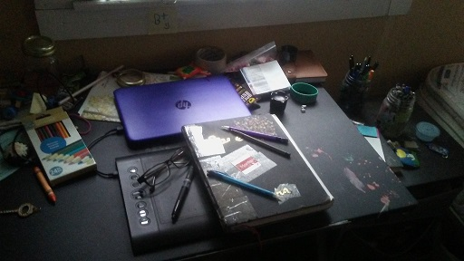
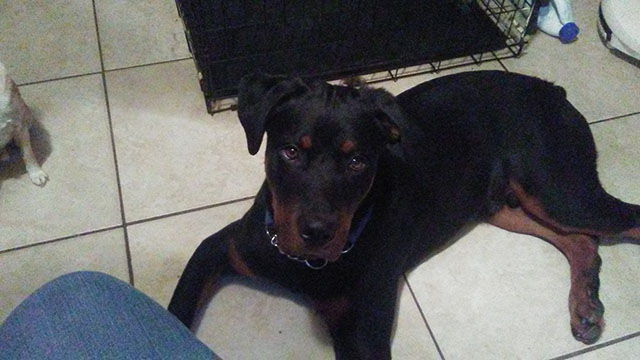

About me!
Hi! My name is Ja'la Brown. Welcome to my website!

I am currently 17 years old and will be turning 18 on July 7th. I was born here in Florida and have currently never left its borders, I do hope to travel one day though, around the country and then the world! I am currently attend my high school Vanguard.
I like to draw. My main sketch book's name is Martha. I hope to become a comic writer or commission artist or both.
In the near future I think I’ll probably make a YouTube channel to share my art but currently I would like to get better at my drawing skills both digitally and traditionally. I’m hoping this class can help me a bit on some things.
Along with drawing I also like to write, I haven't written anything much in a little while though, most stories are ones I come up with in my head. I need to work on putting them down on paper or up on a computer more instead of just thinking about them... I think that if I don’t end up making comics I would probably just write and publish normal books or maybe I’ll do it all and be a jack of all trades, I’m not really sure yet.
I have a pretty large family so I’m only going over close relatives who live with me. There is my mom who is the role model of the household for the most part. There is my dad who is the semi aggressive protector of the house. I also have two siblings who stay in the house with me but I have lots more in general. There is Asia who is a book nerd and Yanni, the youngest who is the attention seeker of the in-house family. Along with the humans in our house hold there are also four animals who we all live with. There is Buddy who is a Chihuahua and the oldest of our beasts, there is Fudge who is a chiwinnie and a bit of a goof, there is Oreo the grumpy little rabbit and, finally our newest edition to the family Jax who we got a few months ago, he is a Rottweiler and just turned 8 months not very long ago. And that’s all for those who live with me but I have a lot more family I just don’t want this to drag on much more.
